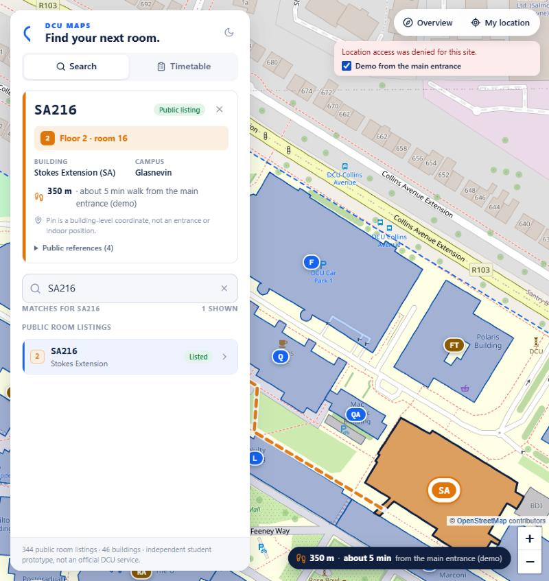
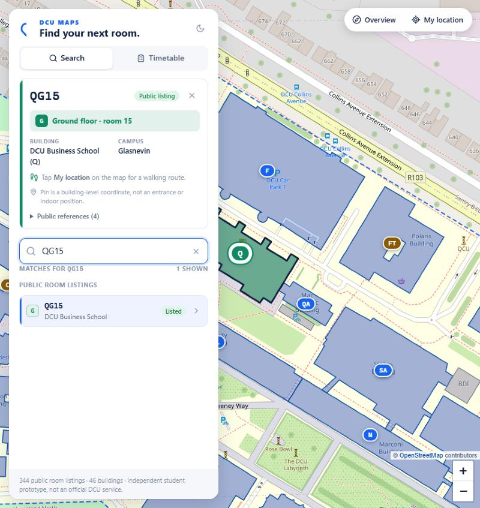
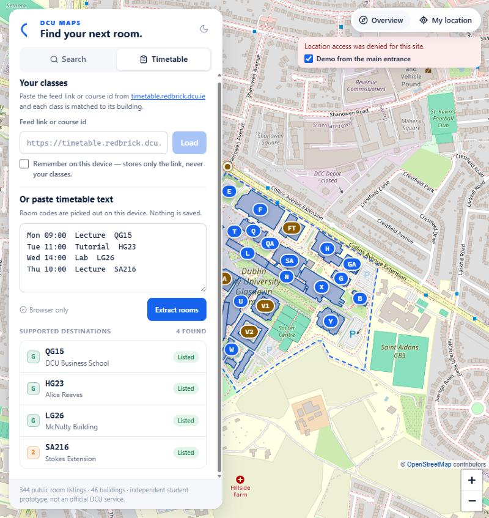

344 real rooms, every one sourced
A rerunnable scraper reads DCU's public Campus Explorer tables. Every room carries its source URL. Nothing is invented from the naming pattern; convention-only matches are labelled "decoded, not confirmed".
For DCU students · Glasnevin · St Patrick's · All Hallows
A DCU timetable says SA216. DCU Maps turns that into Stokes Extension,
floor 2, and a walking route from where you're standing. No account, no API key,
and nothing about you leaves the browser.

The problem
DCU's convention: the longest known building prefix, then the floor, then the room. G is ground, B is basement. First-years are not told this.
How it works
Type a code, paste timetable text, or link your timetable.redbrick.dcu.ie feed. Everything stays on your device.
The code is matched against 344 publicly listed rooms. If it isn't listed, the naming convention still identifies the building and floor, and the app says so.
The building footprint lights up in its floor colour, and an on-device A* search over OpenStreetMap paths draws the walk from your location, with distance and minutes.

The signature
Pick a room on floor 2 and the map, the pin, the route and the panel all turn orange. Pick a ground-floor room and they turn green. You learn the system in one glance and never read "floor" again.
Why DCU Maps
A rerunnable scraper reads DCU's public Campus Explorer tables. Every room carries its source URL. Nothing is invented from the naming pattern; convention-only matches are labelled "decoded, not confirmed".
Building footprints and the path network are pulled from OpenStreetMap once and shipped with the app. Tiles come from OSM. No Google account, no API key, nothing to sign up for.
2,054 ways and 10,098 nodes form a weighted graph. A* picks footpaths over roads and penalises steps. A route takes a few milliseconds and ends at the building footprint, not a postcode.
Paste the feed link and every class shows its room, building and floor, with the next class highlighted. Click a class and the map flies there.
Timetable text and location never leave the device. The feed link is remembered only if you tick the box. There are no accounts and no analytics.
Green means publicly listed. Amber means inferred. Pins say whether they are a sourced coordinate or a footprint centre. The app never claims indoor navigation.

Under the hood
Coming next